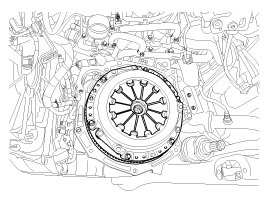
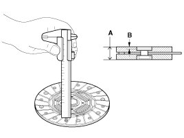
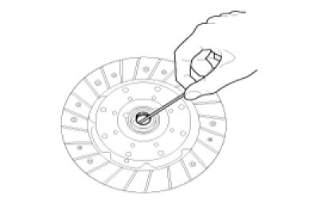
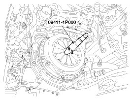

Repair Procedures
Removal
1. Remove the transaxle assembly.
2. Remove the clutch cover bolts. Be careful not to be bent or twist bolts. Loosen bolts in diagonal directions.

Inspection
1. Inspect diaphragm spring wear which is in contact with a concentric slave cylinder bearing.
2. Check the clutch cover and disc surface for wear or cracks.
3. Check the clutch disc lining for slipping or oil marks.
4. Measure the depth from a clutch lining surface to a rivet. If the measured value is less than the specification below, replace it.
Standard value
Clutch disc thickness(A)[when free] :
8.3 ± 0.3 mm (0.3268 ± 0.0118 in.)
Clutch disc rivet depth(B) : 1.1 mm (0.0433 in.)

Installation
NOTE:
If reinstalling used cover, the cover should be installed with its clutch disc as a set.
1. Apply grease on a disc spline part and transmission input shaft spline part as required.
NOTE:
* Possible problems when not following
- When not applying: Excessive wear of splines and bad clutch operation can occur.
- When excessively applying: Grease can be scattered by centrifugal force which can contaminate the clutch disc. This can cause a loss of friction force causing a slip.

2. The 'T/M SIDE' marked surface should face the engineer.
CAUTION:
* Possible problems when the disc is installed in the opposite direction.
- Transaxle shift error or a strange sound can occur due to clutch separation.
3. Install the clutch disc and the cover with SST (A: 09411-1P000).

4. Install the clutch cover bolts. Not to be bent or twisted, Tighten them in diagonal directions.
Tightening torque:
11.8 - 14.7 N.m (1.2 - 1.5 kgf.m, 8.7 - 10.8 lb-ft)
CAUTION:
- Loosely tighten every clutch cover bolts, then torque to specifications in a diagonal direction. This can prevent twisting, vibration of the cover, and the lifting of the pressure plate.
- Install the all the components with the specified torques. If not, the clutch torque transmission may have concerns or the mounting bolt can loosen.

5. Install the transaxle assembly.